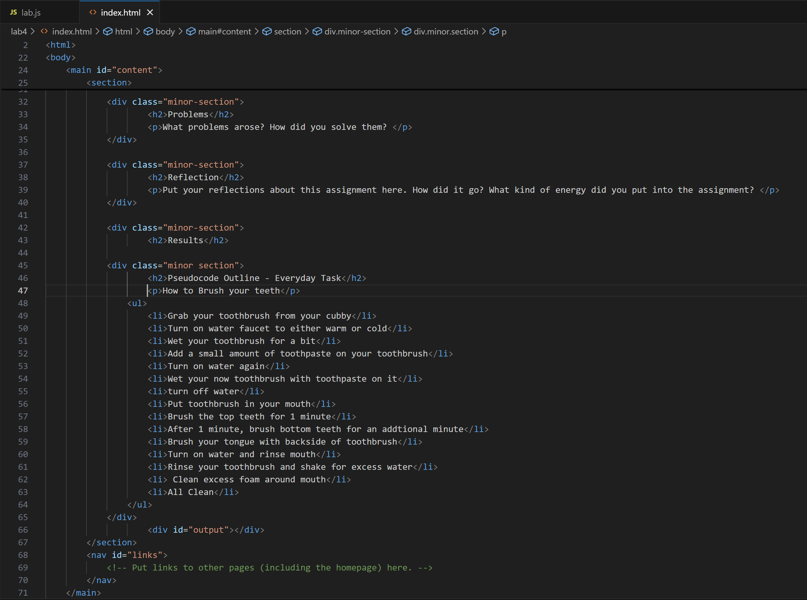
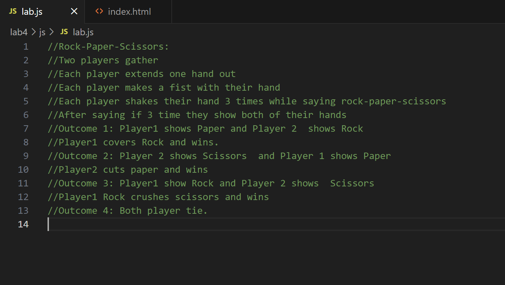
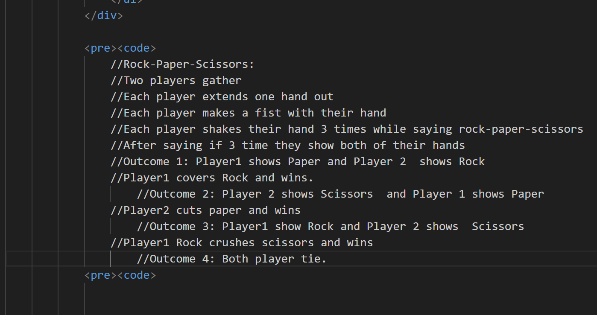

Lab 4: Pseudocoding and Problem-solving
Challenge
Restate the challenge of the lab here.
Problems
What problems arose? How did you solve them?
Reflection
Put your reflections about this assignment here. How did it go? What kind of energy did you put into the assignment?
Results:
Pseudocode Outline - Everyday Task
How to Brush your teeth:
- Grab your toothbrush from your cubby
- Turn on water faucet to either warm or cold
- Wet your toothbrush for a bit
- Turn off water
- Add a small amount of toothpaste on your toothbrush
- Turn on water again
- Wet your now toothbrush with toothpaste on it
- turn off water
- Put toothbrush in your mouth
- Brush the top teeth for 1 minute
- After 1 minute, brush bottom teeth for an addtional minute
- Brush your tongue with backside of toothbrush
- Turn on water and rinse mouth
- Rinse your toothbrush and shake for excess water
- Clean excess foam around mouth
- All Clean
//Rock-Paper-Scissors:
//Two players gather
//Each player extends one hand out
//Each player makes a fist with their hand
//Each player shakes their hand 3 times while saying rock-paper-scissors
//After saying if 3 time they show both of their hands
//Outcome 1: Player1 shows Paper and Player 2 shows Rock
//Player1 covers Rock and wins.
//Outcome 2: Player 2 shows Scissors and Player 1 shows Paper
//Player2 cuts paper and wins
//Outcome 3: Player1 show Rock and Player 2 shows Scissors
//Player1 Rock crushes scissors and wins
//Outcome 4: Both player tie.



id="output">